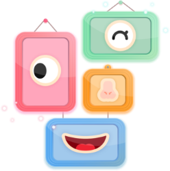
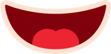

나의 표정 만들기
아이에게 오늘 자신이 느낀 기분을 되돌아보고
생각해 볼 수 있는 시간을 주며,
자신의 기분을 단어로 표현할 수 있게 합니다.
나의 표정만들기를 체험해봐요!



아이에게 오늘 자신이 느낀 기분을 되돌아보고
생각해 볼 수 있는 시간을 주며,
자신의 기분을 단어로 표현할 수 있게 합니다.
나의 표정만들기를 체험해봐요!
서비스 알아보기
눈, 코, 입 등 표정 요소들을 자유롭게 선택하여
오늘 나의 기분을 표현해 볼 수 있습니다.
눈썹, 눈, 입, 코, 얼굴별로 각 요소가 나뉘어져 있으며,
다양한 조합으로 여러가지 표정들을 만들어볼 수 있습니다.
완성된 표정에 대한 세 가지 질문을 통해,
자신의 기분을 단어로 표현해 볼 수 있도록 유도합니다.
대답은 자동으로 녹음되어 추후 전문가와 연계하여
상담을 진행할 수 있습니다.

일랑톡톡은 감정에 대한 이해가 부족하고, 적절한 감정 표현에 서툰 아이들에게
아이들 스스로가 느끼고 있는 감정에 대해 이해하고 명확히 표현할 수 있게 도와줍니다.